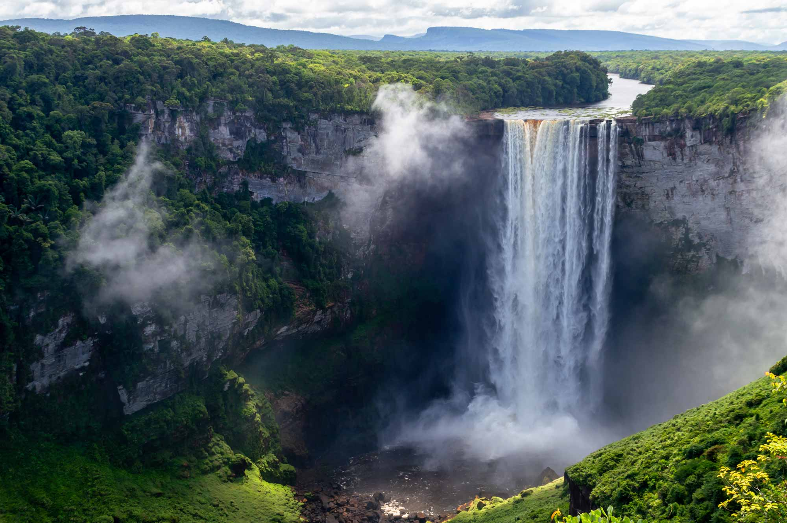

Images of Guyana
History of Guyana
Originally a Dutch colony in the 17th century, by 1815 Guyana had become a British possession. The abolition of slavery led to settlement of urban areas by former slaves and the importation of indentured servants from India to work the sugar plantations. The resulting ethnocultural divide has persisted and has led to turbulent politics. Guyana achieved independence from the UK in 1966, and since then it has been ruled mostly by socialist-oriented governments. In 1992, Cheddi JAGAN was elected president in what is considered the country's first free and fair election since independence. After his death five years later, his wife, Janet JAGAN, became president but resigned in 1999 due to poor health. Her successor, Bharrat JAGDEO, was elected in 2001 and again in 2006. Early elections held in May 2015 resulted in the first change in governing party and the replacement of President Donald RAMOTAR by current President David GRANGER. After a December 2018 no-confidence vote against the GRANGER government, national elections were constitutionally required to take place within three months. After over a year of extra-constitutional rule by the GRANGER administration, elections were held, though voting irregularities led to a nationwide recount. The current Irfaan ALI administration was sworn in to office in August 2020. The discovery of oil in 2015 has been the primary economic and political focus, with many hoping the significant reserves will transform one of the poorest countries in the region. Guyana is the only English-speaking country in South America and shares cultural and historical bonds with the Anglophone Caribbean.
Guyanese people and Society
Religions
- Protestant 34.8%
- Hindu 24.8%
- Christian 20.8%
- Roman Catholic 7.1%
- Muslim 6.8%
- ehovah's Witness 1.3%
- Rastafarian 0.5%
- other 0.9%,
- none 3.1%
Dependency ratios
- total dependency ratio: 53.6
- youth dependency ratio: 44.1
- elderly dependency ratio: 9.5
- potential support ratio: 10.6 (2021 est.)
Age structure
| Age structure | |||
|---|---|---|---|
| Age bracket | % | Males | Females |
| 0-14 years: | 23.65% | 95,605 | 91,654 |
| 15-64 years: | 68.49% | 281,157 | 261,113 |
| 65 years and over | 7.86% | 27,269 | 34,941 |
Languages
- English (official)
- Guyanese Creole
- Amerindian languages (including Caribbean and Arawak languages)
- Indian languages (including Caribbean Hindustani, a dialect of Hindi)
- Chinese (2014 est.)
Geography
Location
Northern South America, bordering the North Atlantic Ocean, between Suriname and Venezuela
Natural Resources
- bauxite
- gold
- diamonds
- hardwood
- timber
- shrimp
- shrimp
Land Use
| Type of land | Land sub type | % |
|---|---|---|
| Agriculture | arable land | 2.1% |
| permanent crops | 0.1% | |
| permanent pasture | 6.2% | |
| total | 8.4% | |
| forest | n/a | 77.4% |
| other | n/a | 14.2% |
Population distribution
The population is heavily concentrated in the northeast in and around Georgetown, with noteable concentrations along the Berbice River to the east; the remainder of the country is sparsely populated